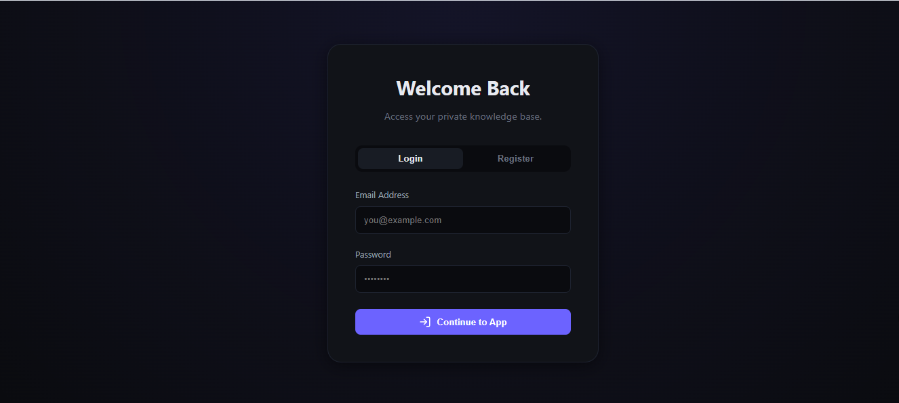
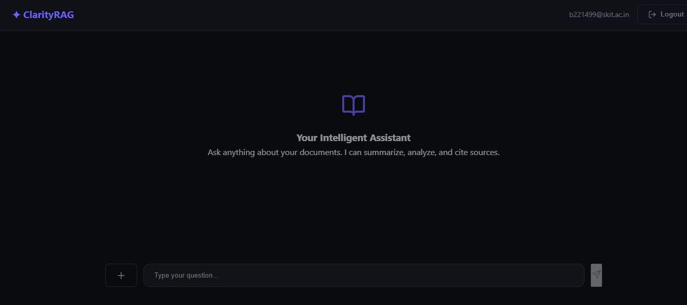
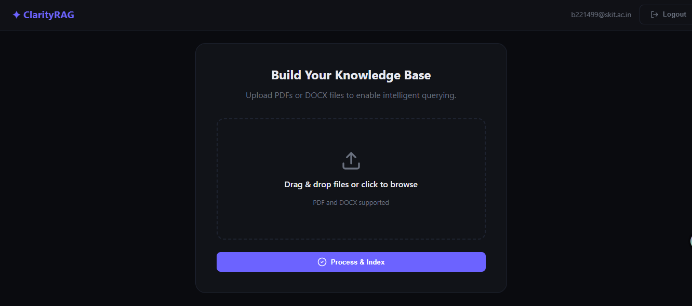

Executive Summary
ClarityRAG is a full-stack AI-powered conversational application using Retrieval-Augmented Generation (RAG). It provides accurate answers based on user documents with a React frontend and FastAPI backend.
Project UI Screens
Login Page

Chat Interface

Upload Knowledge Base

System Architecture
Frontend: React SPA using Vite
Backend: FastAPI server with REST APIs
Data Layer: SQL + FAISS vector storage
Key Technologies
Backend
FastAPI, LangChain, OpenAI, FAISS, SQLAlchemy
Frontend
React, Vite, Tailwind CSS, Axios
Backend Implementation
RAG Pipeline
Uses document chunking, HyDE embeddings, similarity search with FAISS, and strict JSON-based grounding.
- Per-user isolation
- Thread-safe operations
- Duplicate file detection
Frontend Implementation
Includes Auth, Upload, and Chat components.
Project Structure
ClarityRAG/ ├── backend/ ├── frontend/ └── rag.py
Deployment
Backend:
uvicorn app.main:app --reload
Frontend:
npm run dev